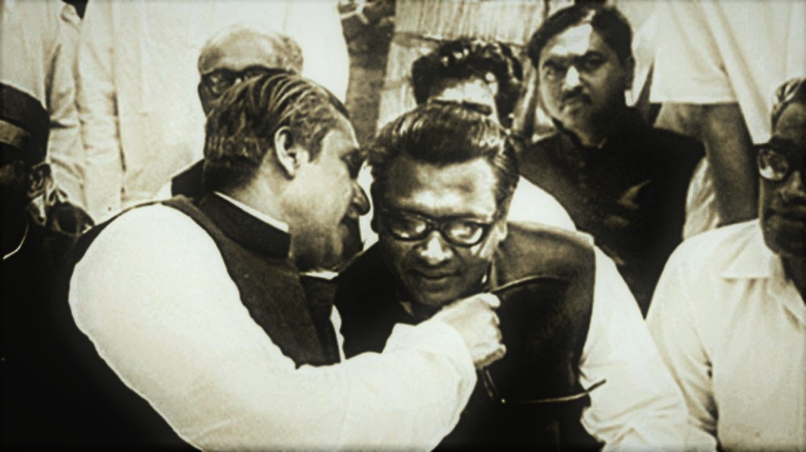

Sheikh Mujibur Rahman was discussing with Tajuddin Ahmed
Here's a time line of Tajuddin Ahmad's life:
- 1925 - Born in Dardaria village, in Kapasia, Gazipur district in British India.
- 1943 - Joined Muslim League and the movement of demanding seperate state for Muslims of India.
- 1944 - He matriculated from Saint Gregory's High School in Dhaka, securing 12th position in merit.
- 1948 - Joined East Pakistan Student League as a founding member.
- 1951 - He and his fellows, notably Oli Ahad and Mohammad Toaha, founded Jubo League
in a meeting that took place on boats on the river Buriganga to avoid police detection.
- 1952 - Involved in the Bengali Language Movement by organizing protests and other activities.
- 1953 - Joined in Awami Muslim League and got elected as the General Secretary of the party in Dhaka District.
- 1954 - Got elected from his constituency in East Pakistan Provincial Assembly election in coalition with some other parties (called Jukta Front),
with their famous joint 21-points election manifesto, defeating the formidable General Secretary of East Pakistan Muslim League,
Fakir Abdul Mannan, by an overwhelming proportion of 3 to 1 vote .
- 1955 - Elected as the Social Welfare and Cultural Secretary of Awami League.
- 1966 - Sheikh Mujib and Tajuddin attended the Lahore Conference and put forward the revised version of those points as the six-point demand to the committee.
- 1971 - Took the key Awami League leadership after Sheikh Mujib's captivity and
formed the Bangladesh Government in exile and became the first Prime minister of Bangladesh.
- 1972 - As was the popular wish, Tajuddin happily agreed to transfer prime minister's
office to Mujib and became the finance minister.
- 1974 - Resigned from the cabinet.
- 1975 - A small detachment of the army killed President Sheikh Mujibur Rahman and his family on 15 August.
Khondaker Mostaq Ahmad, who held office in Sheikh Mujib's cabinet at that time and was complicit in the conspiracy,
ascended to presidency immediately and imposed martial law. Following Sheikh Mujib and his family's assassination
Tajuddin was immediately placed under house arrest. On 22 August, he was arrested along with fellow Awami League politicians
Syed Nazrul Islam, A H M Qamaruzzaman, and Muhammad Mansur Ali and imprisoned at the Dhaka Central Jail. On 3 November,
in what became infamously known as the "Jail Killing Day",Tajuddin along with the other three imprisoned leaders was killed
inside the jail by a group of army officers on the instruction of President Mostaq.
If you have time, you should read more about this incredible human being on his
Wikipedia entry.